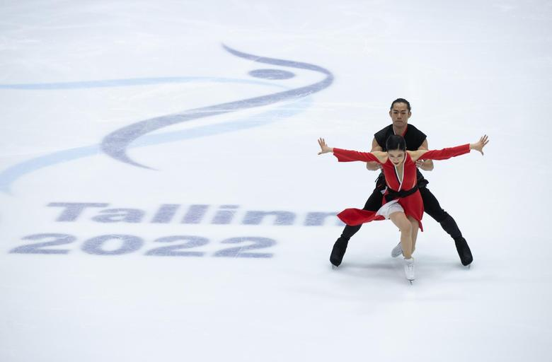

Jalgpalli üleminekuturul hakkavad kehtima uued reeglid

Rahvusvaheline jalgpalliliit FIFA viis sisse mitmed üleminekuturgu puudutavad reeglimuudatused, millega üritatakse noormängijatele senisest paremaid tingimusi luua.
Loe EdasiUSA sanktsioneerib nelja Ukraina riigiametnikku: süüks venelaste õhutatud konspiratsiooniga kaasaminek kodumaa vastu
USA rahandusministeerium kehtestas sanktsioonid nii endiste kui praeguste Ukraina riigiteenistujate suhtes, kes on väidetavalt töötanud oma kodumaa julgeolekut õõnestades Venemaa heaks, vahendab The Guardian. USA luure viitab nende juhtumite najalt, et venelased on planeerimas täiemahulist sissetungi Ukrainasse.
Loe EdasiHaruldasel kombel Eestis toimuvad nelja kontinendi meistrivõistlused said avapaugu
Tallinnas algasid täna iluuisutamise nelja kontinendi meistrivõistlused, kus selgitatakse välja Ameerika, Aasia, Aafrika ja Okeaania parimad. Esimesel võistluspäeval selgitati parimad naiste lühikavas, jäätantsu rütmitantsus ja paarissõidu lühikavas.
Loe Edasi